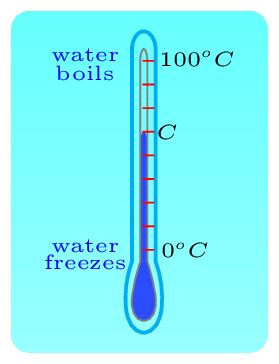

As we know now that the most materials change their volume on heating. Such property of materials can be used to design thermometers to measure the temperature. There are varieties of thermometers in existence based on the phase (state) of materials is being used in thermometer. They are solid state thermometer, liquid thermometer, and gas thermometer. For example: If solid substance is used in thermometers, then the thermometers are called solid state thermometers. Platinum resistance thermometer, thermometer strip on the wall of aquarium, etc. are solid state thermometers. If liquid is used in a thermometer, then it is called a liquid thermometer. Mercury thermometer, alcohol thermometer, etc. are some examples. If gas is used then thermometer is called a gas thermometer. Hydrogen gas thermometer, hilium gas thermometer, nitrogen gas thermometer, etc. are some some examples.
Most common type of thermometer is liquid thermometer. In this thermometer, mercury or alcohol is filled in a narrow galss tube with metallic vessel at the bottom. Howerver, due to major developement in electronics, digitil thermometer is taking over the market to become more common thesedays. Here we are going to study temperature scale on the basis of liquid thermometer.
There are many types of thermometers exist in the practice, but we concentrate our study only on three basic types. They are Fahrenheit thermometer, Celsius (or Centigrade) thermometer, and Kelvin scale. Thermometers need calibration once they are made to provide correct temperature readings. To calibrate the thermometer the choice of unit and two reference points are taken. A centigrade (Celsius) thermometer has 100 divisions between the freezing point (0 degree Celsius) and the boiling point (100 degree Celsius) of water. A temperature of 76 degree Celsius is abbreviated as \(76 ^oC\text{.}\) In Fahrenheit thermometer, there are 180 divisions between the freezing point (32 degree Fahrenheit) and the boiling point (212 degree Fahrenheit) of water. A temperature of 76 degree Fahrenheit is abbreviated as \(76 ^oF\text{.}\) Kelvin scale (usualy not called a thermometer) of temperature is the standard metric system of temperature measurement and mostly used by scientists. The Kelvin scale has 100 equal degree increments between the freezing point and the boiling point of water just as the Celsius scale. However, the zero-degree mark on the Kelvin scale is \(273.15 \) units cooler than it is on the Celsius scale. So a temperature of \(0\) Kelvin is equivalent to a temperature of \(-273.15 ^oC\text{.}\) Traditionally, degree symbol is not assigned to the Kelvin scale. So a temperature of 300 units above 0 Kelvin is referred to as 300 Kelvin and not 300 degree Kelvin. Hence 300 Kelvin is abbreviated as \(300 K\text{.}\) Conversions among Celsius, Fahrenheit, and Kelvin scales are summarized below. The figure below is showing Fahrenheit, Celsius, and Kelvin scale thermometers.
(a)Fahrenheit
(b)Celsius
(c)Kelvin scale
Figure4.1.1.Thermometers
Consider these thermometers are kept into three cups of coffey with same temperature. Where Celsius thermometer reads a temperature of C, Fahrenheit thermometer reads a temperature of F, and a Kelvin scale reads a temperature of K, then we can find their relationship as follows. Let's take one more set of unknown thermometer which has lower reference points marked as \(L\) (for freezing point of water) and upper reference point marked as \(U\) (for boiling point of water). When dipped into the identical cup of coffey, it reads the temeperature as \(X\text{.}\) Hence we can note the temperature of coffey as \(\frac{X-L}{U-L}\text{.}\) The comparision of all the thermometers reading we get the relation as
Kelvin Scale: The scale of thermometers depends upon the physical property (thermal expansion, electrical resistance, etc.) of the substance that is used in the thermometer. The physical property (e.g. thermal expansion) of materials varies differently at the different range of temperatures hence all these thermometers have a limited use. With the idea of constructing a temperature scale which should be independent on the material properties, Scottish physicist William Thomson, Baron Kelvin proposed on the basis of thermodynamics principles that the lowest possible temperature that could be achieved was \(-273 ^oC\text{,}\) in 1848. This minimum temperature is the zero point on Kelvin scale and is known as absolute zero. Kelvin scale is a hypothetical (theoretical) thermometer scale and is also known as absolute scale.  1 .
Subsection4.1.1Quantity of Heat
Heat is a transfer of energy because of temperature difference. When an object gains or losses heat it either changes its temperature or its phase (state). A change in temperature is associated with changes in the average kinetic energy of the particles and a change in phase is associated with changes in the internal potential energy possessed by the object. In this section we will learn how to measure the quantity of heat gained or released by an object.
Subsection4.1.2Specific Heat
Heat absorbing capacity of a material is known as specific heat capacity (or simply, specific heat). It is a material property. Different materials absorb different amount of heat even for the same rise of temperature. For example, if you heat an identical iron ball and an aluminum ball in the same pot for the same time duration, then you would be surprised that the aluminum ball is colder than the iron ball. This is because the specific heat of iron is less than that of aluminum. In iron, more of the heat energy spent to increase the kinetic energy of its molecules than to increase the intermolecular potential energy. Hence, the the iron has a higher temperature. The quantity of total heat transfered to the body is given by the following formula:
Where, \(Q\) stands for amount of heat required to change the temperature, \(m\) stands for mass of the substance, \(c\) stands for the specif heat capacity of the substance, and \(\Delta T\) stands for the temperature change (i.e., \(\Delta T=T_f-T_i\)). Hence specific heat can be defined as the amount of heat required to change the temperature of 1 kg of the substance to \(1 ^oC\text{.}\) Its SI unit is \(J/kg\cdot^oC\text{.}\) The greter the specific heat of the substance, the greater would be the amount of heat needed to raise the temperature per unit mass. The higher the specific heat of the substance, the higher amount of heat it can hold. The table below shows the specific heat of some common materials.
Table4.1.3.Specific heats of some common substances
Heat absorbed or released by the material during phase change is called a latent heat. There is no temperature change during a phase change hence this energy is hidden from temperature scale. The energy dissipated or released during the phase change is in adjustment of particles potential energy in the bonds. Hence the amount of heat \(Q\) during phase change is given by
\begin{equation}
Q = mL \tag{4.1.3}
\end{equation}
Here \(Q\) is the amount of heat required to change the state or phase of the substance at change of state temperature, \(m\) is the mass of the substance, and \(L\) is the latent heat of the substance. Latent heat is also a material property. The latent (hidden) heat of fusion for water at \(0 ^oC\) is approximately 79.7 calories (334 J) per gram, and the latent heat of vaporization at \(100 ^oC\) is about 533 calories (2,230 joules) per gram. Simulation for Boiling Water 2 
Subsection4.1.4Heat Transfer
It is a process of transfer heat from one location to another due to temperature difference. Heat can only flow from high temperature to low temperature. There are three processes involved in heat transfer. They are conduction, convection, and radiation. Conduction: In this process heat is transferred through a body by physical contact. In microscopic level atoms and molecules are always in random motion at any temperature above absolute zero. When heated, these particles (atoms and molecules) gain thermal energy and begin vibrating even higher amplitude knocking the neighboring particles. By doing so, they impart some of their energy to their neighboring particles, and so on. Eventually heat is carried away from one end of a substance to another. In conduction, heat carrying particles do not physically move from their place rather they transfer their energy to neighbors when they knock one another. Every time one particle knock to another it passes some of its energy to next one and returns to its original place. Heat transfers from the burner of a stove through the bottom of a pan to food in the pan is transferred by conduction. Conduction occurs in all states of substances solid, liquid, and gas. In solids, conduction happens due to molecular vibration. In gases and liquids, it is due to collision and diffusion of the molecules during their random motion. Figure4.1.5.Conduction Process
Convection: In this process heat transfer occurs by the actual movement of fluid particles. Convection is heat transport due to bulk fluid motion. Convection happens in gases and liquids. When a fluid is heated, its molecules which are in contact with the hot surface get hot and expand. That is the fluid above a hot surface expands, becomes less dense, and rises. It carries the thermal energy along when rises up. The relatively cold fluid on the upper surface is heavier and sink down near the heat source. Hence a current of heat cycle develops in the convection process, called convection cycle.
Radiation: It is the process in which heat transfers without the need of intervening medium. Heat transfer occurs when electromagnetic waves emitted or absorbed. The warming of the earth surface by the Sun is due to radiation. Heat transfer by this process is the fastest one. All bodies above absolute zero emit thermal radiation. At room temperature the radiation is in the infrared range, wavelengths longer than those of the visible spectrum. In atomic domain, the radiation is caused because of oscillating ions and electrons in a warm solid are accelerating electric charges, such charges radiate. Different substances radiate with different efficiencies. The good radiator of radiation is a good absorber of radiation. A perfect absorber is called a black body (such perfection is not found in nature, but some things are close). Hence a black body is also a perfect radiator. A black body absorbs and emits radiation of all most all frequencies. It was found experimentally that heat energy radiated per unit time per unit surface area of a perfectly black body is proportional to the fourth power of its absolute temperature.
Subsection4.1.5Entropy
Entropy is a mathematical concept explains some usefule phenomena of thermodynamics. The change in entropy tells whether the process can take place naturally or not. A natural tendency of systems is to lose order. Entropy is a measure of that disorderness. When sugar is dissolved in water it becomes more randomized, and will not reconstitute itself in the crystalline form again by itself, unless we apply heat energy from outside to the system and evaporate all water. When a hot and a cold body are put in contact to each other, heat energy begins to flow from the hot body to the cold body until they reach at thermal equilibrium (same Temperature). Heat will never move back to the other way. To move heat from a cold body to a hot body an external work must be done by an external source such as a heat pump. Entropy is a measure of the system's thermal energy per unit temperature that is unavailable for useful work. The concept of entropy provides the direction of spontaneous change for many process. It tells us that which process is allowed and which is completely prohibited even if it can not violet the fundamental law of conservation of energy. A block of ice placed on a hot pan surely melts, while the pan goes cooler. Such a process is called irreversible because no slight change will cause the melted water to turn back into ice while the pan goes hotter. In contrast, a block of ice placed in an ice water bath will either thaw a little more or freeze a little more, depending on whether a small amount of heat is added to or taken out from the system. Such a process is reversible because only an infinitesimal amount of heat is needed to change its direction from progressive freezing to progressive thawing.
According to III law of thermodynamics, it is impossible to obtain absolute zero by any physical means.